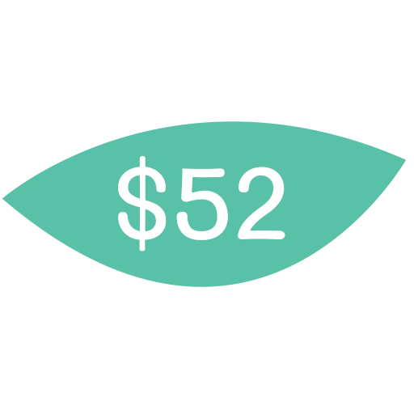

Llega al metro Indios Verdes.
Sábado 21 de junio · 2:00 PM
Viaje a Tequixquiac
Una guía clara para llegar desde Indios Verdes y disfrutar el evento sin perder detalle.
Salida
Indios Verdes
Costo estimado
$52.00
Duración
90 min aprox.
Destino
Tequixquiac
Ruta recomendada
Cómo llegar a Tequixquiac
Estos son los puntos clave para tomar el transporte correcto y llegar con calma.
Camina en dirección contraria a la llegada del metro, hacia atrás, al sur.
Baja las escaleras, sal de torniquetes y avanza a la izquierda por el túnel hacia la salida A.
Busca el camión negro con verde que anuncia: “Zumpango, Tequix, Apaxco por Mexiquense”.
Fórmate, paga $52.00, pide destino Tequixquiac y guarda tu boleto.
El trayecto pasa por caseta 30-30, Zumpango y finalmente Tequixquiac.

Referencias visuales
Galería de la ruta





Ubicación
Mapa del destino
Agenda
Programa del evento
Un recorrido sencillo por las actividades principales del día.
21 de junio
2:00 PM

Bienvenida
Recepción de los participantes y arranque del evento.

Albercada
Tiempo libre para convivir y refrescarse.

Comida tradicional
Comida de Tequixquiac para compartir con todos.

Talleres interactivos
Juegos y dinámicas para los invitados.

Fiesta y convivencia
Espacio para música, convivencia y cierre de la noche.

Clausura
Entrega de kit para dormir y cierre del programa.